| Name | Titans Inherited | Description | Titan Form |
|---|---|---|---|
| Ymir Fritz | Founding Titan |
Ymir Fritz's Titan form was enormous in size with light hair, a feminine figure, and long protruding ribs. Her Titan's face possessed no apparent skin, musculature, or eyes, leaving only a skull visible. Ymir Fritz was the first individual to receive the power of the Titans, making her the true Founder of all Titans.[3] She used her powers to make great advancements for her subjects, such as cultivating barren lands, building roads across the world, and building bridges between the mountains.[54] After 13 years, she died, and her powers were split between the Nine Titans; her power as the Founding Titan would be passed down through the Fritz family (later the Reiss family) over the next two millennia.[3][55] |
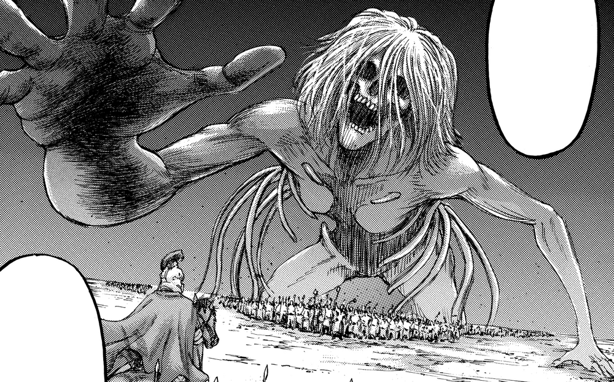 |
| Karl Fritz | Founding Titan |
Karl Fritz's Titan had light-colored hair, long arms, and a skinny physique. He used his Titan power to create the Walls and wipe out the memories of the most of inhabitants. His pacifistic will passed down to his descendants that inherit the Founding Titan > |
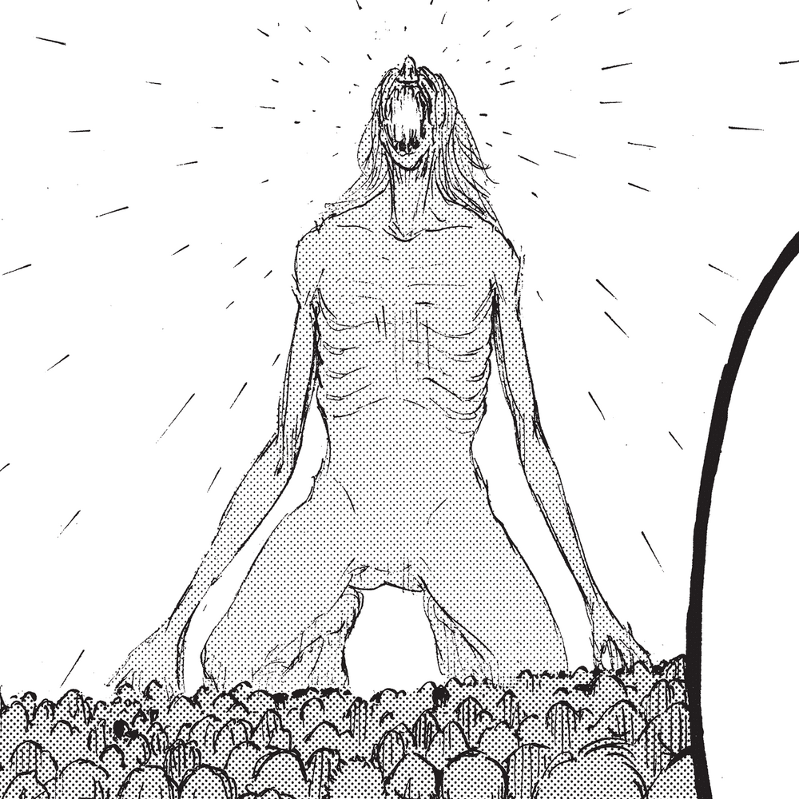 |
| Eren Kruger | Attack Titan |
Kruger's Titan face was very similar to his human form and had long dark hair, like Grisha and Eren. His body was muscular and he appeared to have great strength, as he was able to crush a boat.[56] |
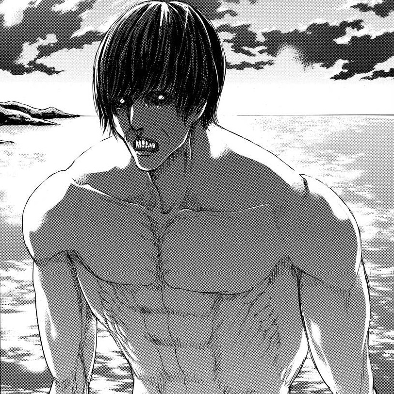 |
| Uri Reiss | Founding Titan |
Though his full Titan form is never shown, Uri possessed the same regular abilities as Titans and others with the power of the Titans. |
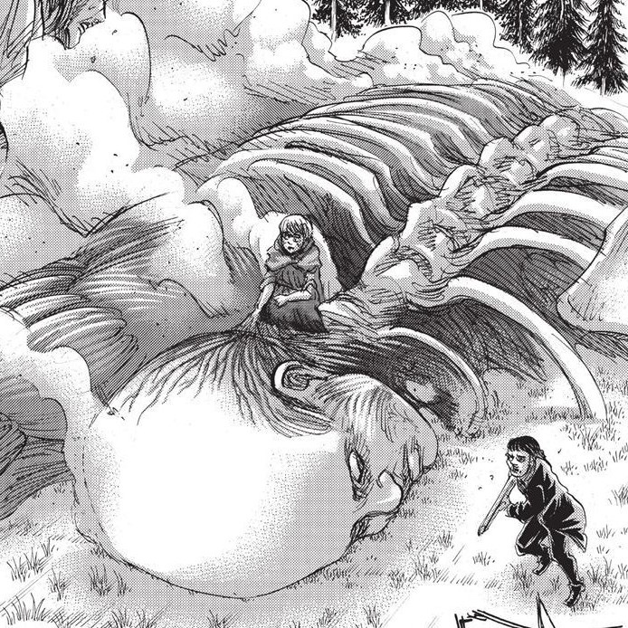 |
| Tom Ksaver | Beast Titan |
Ksaver's Beast Titan form possessed features of a bighorn sheep, having had a pair of dark curved horns on its head, a lengthened muzzle and a nose resembling the animal it takes after, and light fur growing on his head, neck, and upper body. Like most Titans, it stood bipedal. |
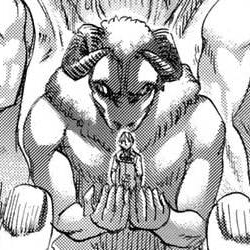 |
| Grisha Yeager | Attack Titan Later: Founding Titan |
Grisha's 15 m Titan form shared similarities with Eren's, such as their elongated ears and long hair, except Grisha's Titan jaws have flesh and a beard. He had a bulkier body built. Unlike most Titan forms shown so far in the series, his body was very heavy-built. He used his Titan form to kill and devour Frieda Reiss along with most of her family,[57] gaining the Founding Titan. As he did not have royal blood, Grisha could not use the powers of the Founding Titan. |
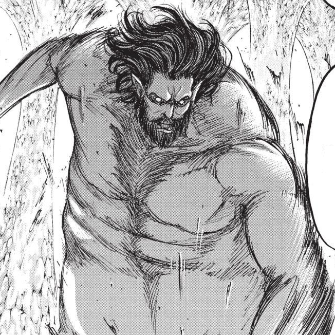 |
| Frieda Reiss | Founding Titan |
Frieda was able to transform herself into a 13 m female-looking Titan with light hair. She devoured her uncle below the Reiss chapel when she was 15 in order to receive his Titan abilities and secrets of the world.[58] She had the powers of the Founding Titan, but she died before she could learn how to fully use it. > |
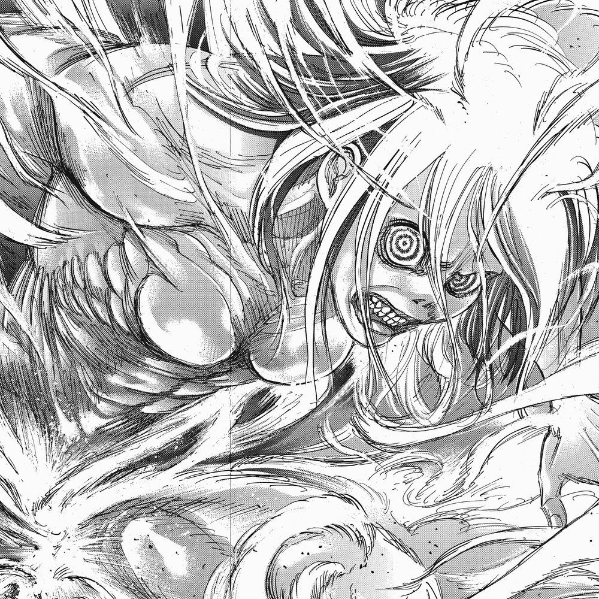 |
| Zeke Yeager | Beast Titan |
Zeke Yeager's Titan had a distinct, ape-like appearance. His Titan's body structure and facial features were like that of a human's, and he walked upright like one also. He stood at a previously unseen 17 m in height. Dark fur covered the large majority of his body, with the exception of his face, hands, feet, and torso. His arms were also elongated, almost reaching his ankles, with long fingers, hardened nails that he could use to crush rocks and parts of the Wall, and fully-functional thumbs. The proportions of his upper body were similar to that of the Colossus Titan, possessing a massive chest and small head, as well as unusually slim arms.[59] Zeke's Titan possessed massive strength and precision: he accurately hit members of the Survey Corps by hurling chunks of the Wall from far away, and destroyed an entire fleet of ships by throwing missiles into the sea.[60] He was also able to defeat the Armored Titan without any sustained damage.[61] It has been noted that the Beast Titan is the "strongest" Titan.[62] Furthermore, Zeke possessed the unique ability to create Pure Titans by screaming after administrating his spinal fluid into Subjects of Ymir; he had some control of these Titans and could even make them move at night.[63] Previous Beast Titans did not have this ability due to Zeke possessing royal blood from his mother, Dina Fritz. > |
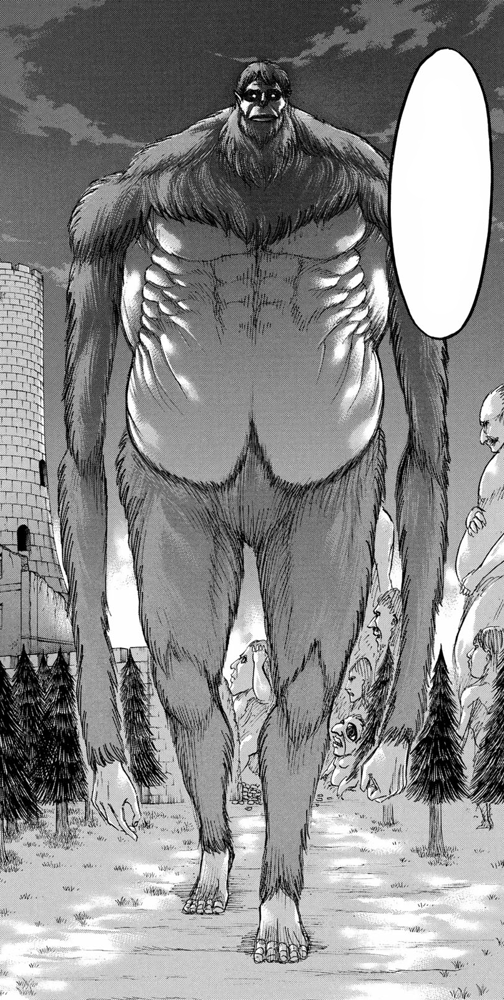 |
| Pieck Finger | Cart Titan |
Pieck's Titan form was 4 m tall, the smallest Titan form known yet, and had always been seen moving on her four limbs. Her head, canine-like mouth, and nose were notably oversized in contrast with her eyes and ears. She could stay transformed in this form for at least two months. |
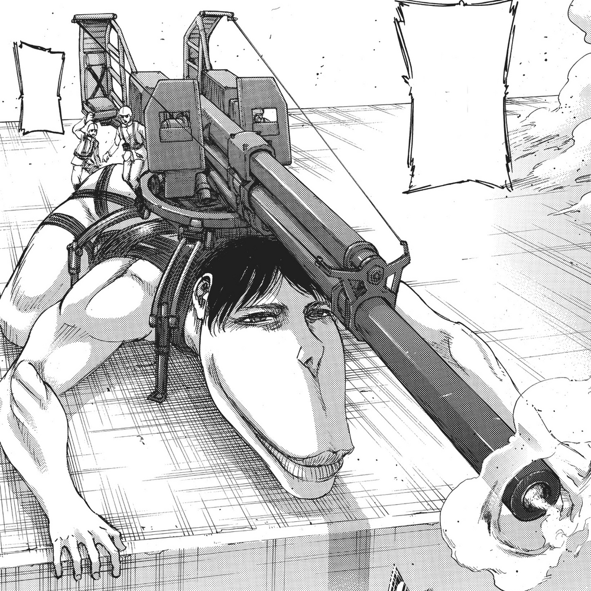 |
| Marcel Galliard | Jaw Titan |
Marcel's Titan possessed long, dark hair and a thick beard at the chin. However, the face above the jawline was hairless, and his Titan's mouth took a diamond-like appearance in place of lips or cheeks. The fingers and jaws of Marcel's Titan were hardened, capable of crushing almost anything |
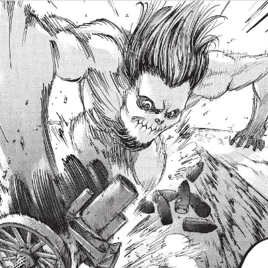 |
| Bertolt Hoover | Colossal Titan |
Bertolt's Titan was the first to appear chronologically within the series. As it was of a 60 m class, it was the tallest Titan of the Nine Titans seen so far, and the second largest Titan overall (coming second only to Rod Reiss' Titan, although it cannot stand); it is four times the height of the regular Titans of the tallest class (15 m). His Titan had incredible strength like no other, and was capable of breaking down Wall Maria's gate with a single kick. His Titan's body temperature was extremely high, to the point that it was constantly emitting steam. The heat of this steam was intense enough to keep dozens of experienced soldiers at bay, lest they be cooked alive.[64] However, because this Titan was so large, it could only move slowly. Bertolt’s Titan had no skin and swollen, pillar-like feet, unlike other Titans. When transforming, Bertolt had the potential to release an explosive amount of energy during Titan transformation, leveling buildings in a short radius of his transformation, and generating a mushroom-shaped cloud of steam.[ |
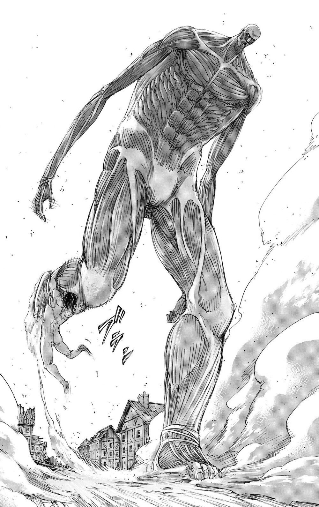 |
| Reiner Braun | Armored Titan |
Reiner Braun's Titan was a 15 m class with a slight resemblance to his human form. His Titan form had thick, hardened plates of skin all over his body which served as his armor. In addition to that, the Titan was able to further harden his arms and feet, and create sharp claws.[17] This Titan was well-built and has a hunched profile. Its only visible weaknesses were the small areas on the backs of its joints where there is no armor.[16] Though not particularly fast, this form was strong and agile, capable of destroying a fortified Wall after a sufficient running start. |
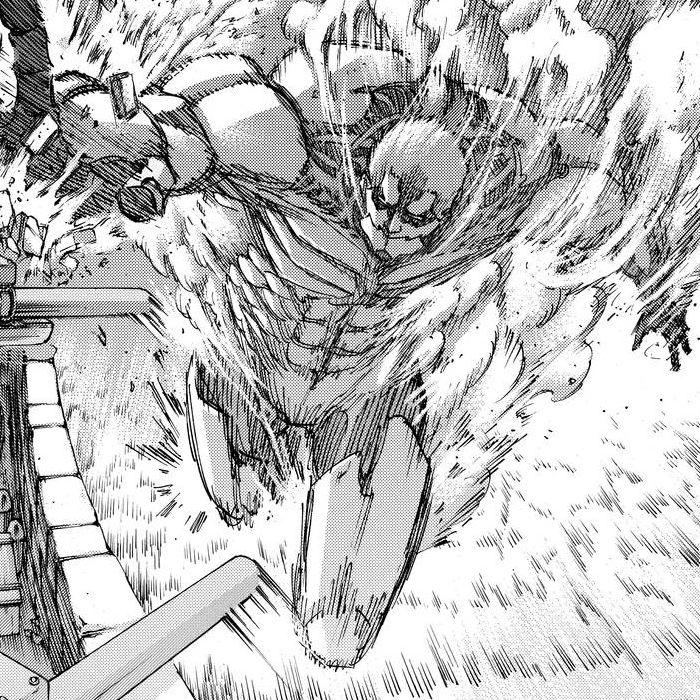 |
| Annie Leonhart | Female Titan |
Annie Leonhart could transform into a 14 m class Titan with a distinctively feminine build and short, blonde hair. Her Titan had little skin, exposing her muscle tissues. Her transformation endowed her with immense strength and speed. A Titan of athletic appearance with lean muscle and minimal skin, Annie's was a Titan of unusual power and intellect. It had the stamina and focus to maintain a running pace capable of keeping up with horses over a long distance.[66] This Titan form also had the unique ability to harden its body parts by generating a crystalline substance across chosen areas of its body, allowing it to simultaneously protect its nape and fight.[67] Combined with Annie's refined martial arts, it could perform incredibly deadly and destructive attacks. The Female Titan could call upon nearby Pure Titans by screaming,[68] drawing them towards the vicinity of the Female Titan's current location. |
 |
| Ymir | Jaw Titan |
Ymir's Titan was a 5 m class Titan with long, black hair, very large irises and an agile, chimpanzee-like body. This form granted Ymir rather long arms and sharp claws and provided her with great agility. Ymir's Titan had a mouth with all pointed teeth, as well as sharp claws that can either be used to grasp on to things or for combat. Its long arms and small, muscular body enabled it to maneuver itself around with great speed and agility in the same environments as those with vertical maneuvering equipment, making it a formidable foe in battle.[69] Unlike the others who gained their powers under a controlled process, Ymir gained her powers unexpectedly by eating Marcel while roaming Paradis Island. |
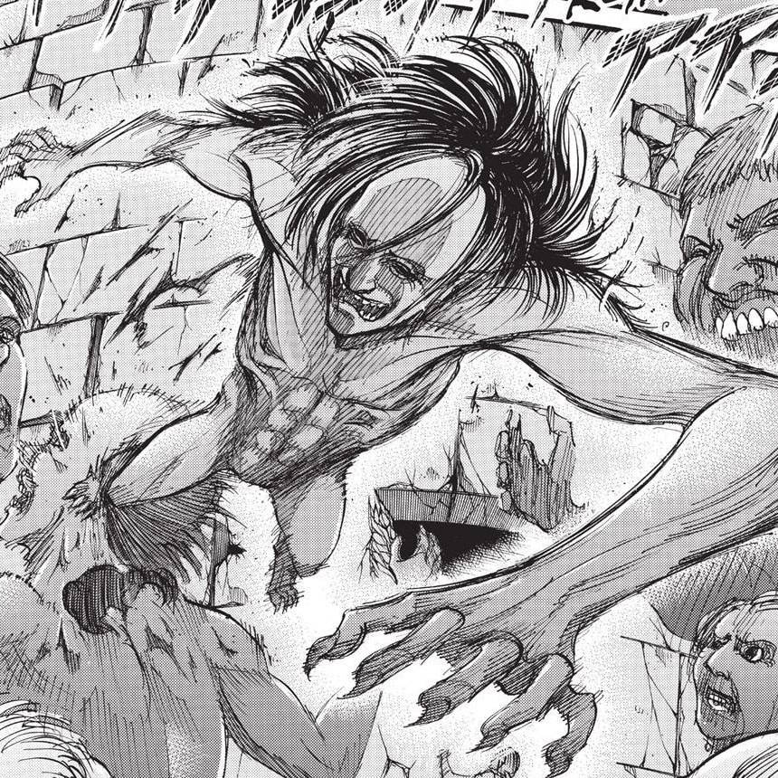 |
| Eren Yeager | Attack Titan, Founding Titan Later: War Hammer Titan |
Eren Yeager's initial Titan is a 15 m class, which he received after devouring his father. Its most prominent characteristics were its elongated ears, fleshless jaws, and highly muscular build. Eren's Titan form had so far been shown to have fairly substantial physical strength and endurance. After ingesting a bottle labeled "Armor" from Rod Reiss's bag, Eren's Titan gained the ability to harden, allowing him to seal the hole in Wall Maria.[51] Prolonged and repeated use of this Titan form had allowed Eren to gradually increase control over its initially unstable mental state. Its eyes were a piercing gray. Initially due to not having royal blood, Eren was unable to use the powers of the Founding Titan. However, if he came in contact with a Titan with royal blood, such as Dina Fritz, he could temporarily use its abilities like controlling Pure Titans with his screams.[70] During the Raid on Liberio, Eren killed and consumed Lara Tybur, inheriting her War Hammer Titan and gaining structural hardening abilities, which he went on to use against both the Armored Titan and Jaw Titan.[71] After coming into contact with his half-brother Zeke, Eren was able to obtain the full capabilities of the Founding Titan, such as controlling the Colossus Titans within the Walls. His Founding Titan was massive, towering over the Colossus Titans by a large scale. This form is known as Doomsday Titan (終尾の巨人 Shūbi no Kyojin?). |
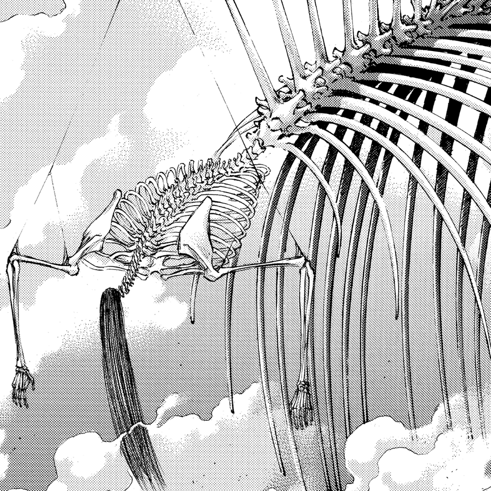 |
| Lara Tybur | War Hammer Titan |
Lara Tybur's Titan form was around 15 m. Her Titan had no hair and her skin jailed the exposed areas near her eyes and mouth. She was capable of hardening her Titan form into various weapons and structures.[26] She was skilled with the hammer and was able to defeat Eren Yeager with a single blow from it. Unlike the other intelligent Titans, she controlled her Titan from far away instead of from inside the nape, with her human body, encased in hardened flesh, stayed connected to her Titan body by a kind of "flesh cord. |
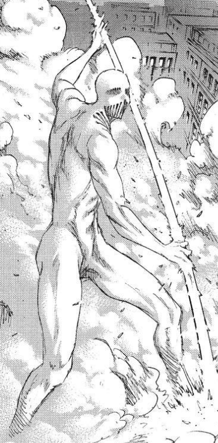 |
| Armin Arlert | Colossus Titan |
Armin Arlert gained the power of the Titans by eating Bertolt Hoover after Levi injected him with a Titan serum obtained from Kenny Ackerman in Battle of Shiganshina District. His Titan was similar in size to Bertolt's Colossus Titan, though with a more gaunt body and having unique features such as the ribs being exposed and having the windpipe visible along with two tendons stretching from the Titan's neck. Armin's Titan possessed the same abilities as his predecessor's Titan including a destructive transformation, as seen during the Raid on Liberio when the Colossus Titan destroyed the naval port and used its enhanced strength to crush the ships to ensure their destruction |
 |
| Porco Galliard | Jaw Titan |
Porco Galliard received his Titan from Ymir, after she decided to return the Titan to Marley.[72] Galliard's Titan possessed long, light hair and a thick beard at the chin. However, the face above the jawline was hairless, and his Titan's mouth took a cog-like appearance in place of lips or cheeks. The fingers of Galliard's Titan possessed segments of hardened skin. |
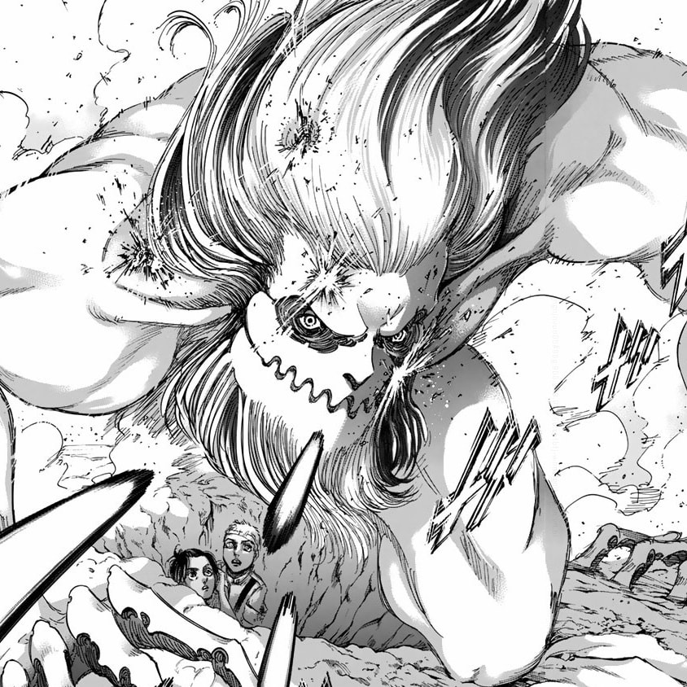 |
| Falco Grice | Jaw Titan |
Marcel's Titan possessed long, dark hair and a thick beard at the chin. However, the face above the jawline was hairless, and his Titan's mouth took a diamond-like appearance in place of lips or cheeks. The fingers and jaws of Marcel's Titan were hardened, capable of crushing almost anything |
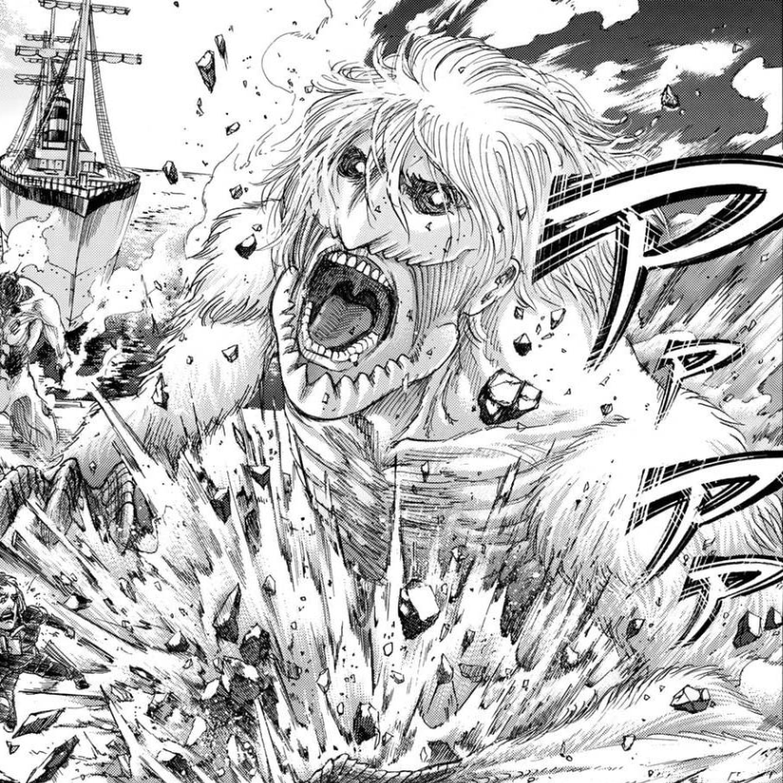 |